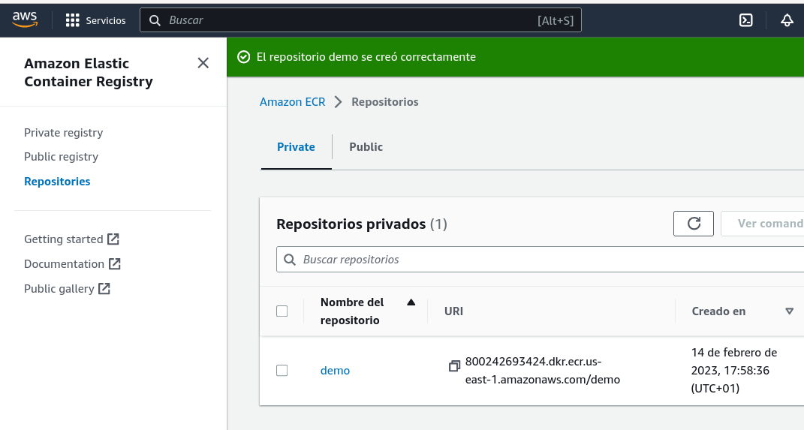
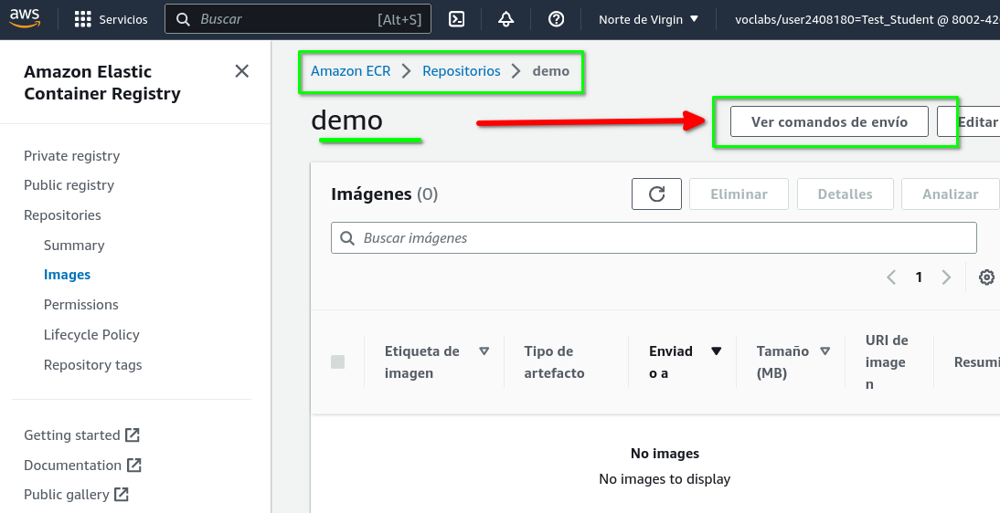
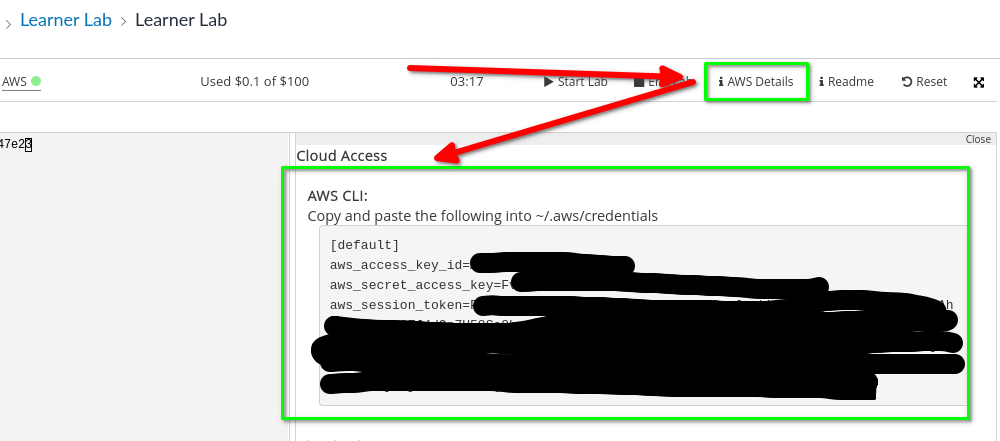

AWS ECR¶
1. Introducción¶
En este documento se explica cómo usar el repositorio ECR de AWS en vez de DockerHub.
2. Crear una imagen en local¶
Puede usar una imagen de prácticas previas, por ejemplo galería:
~/galeria$ docker images
REPOSITORY TAG IMAGE ID CREATED SIZE
galeria latest 1869ebdaf8f8 4 s, ago 145MB
~/galeria$
3. Crear repositorio ECR en AWS¶
- Ir a consola AWS
- Buscar servicio ECR
- Crear un repositorio con las opciones por defecto. En este ejemplo el nombre utilizado es
demo.

La URI del repositorio en este caso es 800242693424.dkr.ecr.us-east-1.amazonaws.com/demo. Para saber cómo etiquetar la imagen y enviarla al repositorio ECR debe pulsar el botón Ver Comandos de Envío

Los pasos que le indica son:
# login: autenticarnos en el repositorio creado
$ aws ecr get-login-password --region us-east-1 | docker login --username AWS --password-stdin 800242693424.dkr.ecr.us-east-1.amazonaws.com
# Construir la imagen en local
$ docker build -t demo .
# Etiquetar imagen en lcoal usadno repositorio ECR creado
$ docker tag demo:latest 800242693424.dkr.ecr.us-east-1.amazonaws.com/demo:latest
# Push de la imagen al repositorio demo en ECR
$ docker push 800242693424.dkr.ecr.us-east-1.amazonaws.com/demo:latest
4. Instalación AWS CLI¶
Necesita instalar AWS CLI: https://docs.aws.amazon.com/cli/latest/userguide/getting-started-install.html#cliv2-linux-install
~/galeria$ curl "https://awscli.amazonaws.com/awscli-exe-linux-x86_64.zip" -o "awscliv2.zip"
...
~/galeria$ unzip awscliv2.zip
...
~/galeria$ sudo ./aws/install
[sudo] password for alu:
You can now run: /usr/local/bin/aws --version
~/galeria$
~/galeria$ aws --version
aws-cli/2.9.23 Python/3.9.11 Linux/5.10.0-19-amd64 exe/x86_64.debian.11 prompt/off
~/galeria$
Si intenta hacer docker login genera in error:
~/galeria$ aws ecr get-login-password --region us-east-1 | docker login --username AWS --password-stdin 800242693424.dkr.ecr.us-east-1.amazonaws.com
Unable to locate credentials. You can configure credentials by running "aws configure".
Error: Cannot perform an interactive login from a non TTY device
~/galeria$
Y para poder ejecutar el comando aws configure necesita los datos de que le ofrece el Learner Lab en AWS Details.

El entorno de AWS Academy es un diferente al normal. En este caso harían falta dos ficheros, el de credenciales y el de configuración.
5. Proceso completo¶
-
Login
1. Etiquetar~/galeria$ aws ecr get-login-password --region us-east-1 | docker login --username AWS --password-stdin 800242693424.dkr.ecr.us-east-1.amazonaws.com WARNING! Your password will be stored unencrypted in /home/alu/.docker/config.json. Configure a credential helper to remove this warning. See https://docs.docker.com/engine/reference/commandline/login/#credentials-store Login Succeeded Logging in with your password grants your terminal complete access to your account. For better security, log in with a limited-privilege personal access token. Learn more at https://docs.docker.com/go/access-tokens/ ~/galeria$1. Pushalu@xdebian11:~/galeria$ docker tag galeria:latest 800242693424.dkr.ecr.us-east-1.amazonaws.com/demo:latest alu@xdebian11:~/galeria$ docker images REPOSITORY TAG IMAGE ID CREATED SIZE 800242693424.dkr.ecr.us-east-1.amazonaws.com/demo latest 1869ebdaf8f8 55 minutes ago 145MB galeria latest 1869ebdaf8f8 55 minutes ago 145MB alu@xdebian11:~/galeria$alu@xdebian11:~/galeria$ docker push 800242693424.dkr.ecr.us-east-1.amazonaws.com/demo Using default tag: latest The push refers to repository [800242693424.dkr.ecr.us-east-1.amazonaws.com/demo] be2a97059789: Pushed .... latest: digest: sha256:e7a21ed360d638735715ced30358ecde1ce5bb6f7e86 size: 2203 alu@xdebian11:~/galeria$
6. Test del repositorio ECR¶
Para probar la imagen puede lanzarla en local (o en una instancia EC2). Recuerde que al ser el repositorio privado debe que hacer login previamente (y eso obliga a tener configuradas las credenciales, etc.).
admin@ip-172-31-19-133:~/.aws$ aws ecr get-login-password --region us-east-1 | docker login --username AWS --password-stdin 800242693424.dkr.ecr.us-east-1.amazonaws.com
WARNING! Your password will be stored unencrypted in /home/admin/.docker/config.json.
Configure a credential helper to remove this warning. See
https://docs.docker.com/engine/reference/commandline/login/#credentials-store
Login Succeeded
admin@ip-172-31-19-133:~/.aws$
admin@ip-172-31-19-133:~/.aws$ docker pull 800242693424.dkr.ecr.us-east-1.amazonaws.com/galeriaclase:latest
latest: Pulling from galeriaclase
3f9582a2cbe7: Pull complete
....
ed1e0e39aa0c: Pull complete
Digest: sha256:5f5a4bd2e09f364eaf8cf6a2267366e20db81aa0fc7f8f5caedede0c4ba4f62a
Status: Downloaded newer image for 800242693424.dkr.ecr.us-east-1.amazonaws.com/galeriaclase:latest
800242693424.dkr.ecr.us-east-1.amazonaws.com/galeriaclase:latest
admin@ip-172-31-19-133:~/.aws$
Y sólo queda lanzarla:
admin@ip-172-31-19-133:~/.aws$ docker run -dp 80:5000 800242693424.dkr.ecr.us-east-1.amazonaws.com/galeriaclase:latest
d1ff4f5104bfb9b400b9a808ded902f1202bbea4bdf677799ffe643d8e3bc261
admin@ip-172-31-19-133:~/.aws$
Se puede probar en local:
admin@ip-172-31-19-133:~/.aws$ curl localhost
<!DOCTYPE html>
<html lang="en">
<head>
<title>Ejemplo Flask App</title>
</head>
<body>
<h1>Hello from Flask App!</h1>
</body>
</html>
admin@ip-172-31-19-133:~/.aws$
7. TODO Anexo Aclaraciones EC2¶
Para poder descargar la imagen desde la instancia EC2 es necesario además de docker
- instalar AWS CLI
- configurar AWS CLI (ficheros credentials y config en .aws/).
Nuestra plantilla de lanzamiento podría incluir como "Datos de usuario" la instalación de Docker y la de AWS CLI:
#!/bin/bash
curl -fsSL https://get.docker.com -o get-docker.sh
sudo sh get-docker.sh
sudo groupadd docker
sudo usermod -aG docker admin
curl "https://awscli.amazonaws.com/awscli-exe-linux-x86_64.zip" -o "awscliv2.zip"
unzip awscliv2.zip
sudo ./aws/install
mkdir .aws
touch .aws/credentials
touch .aws/config